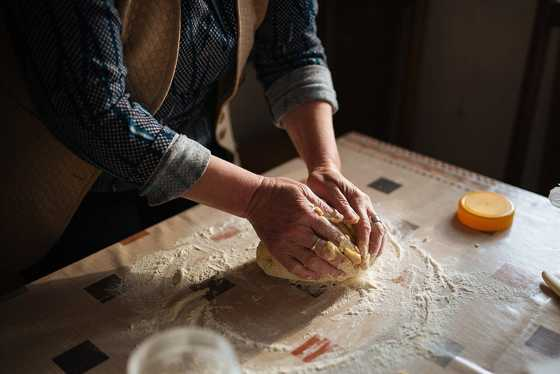
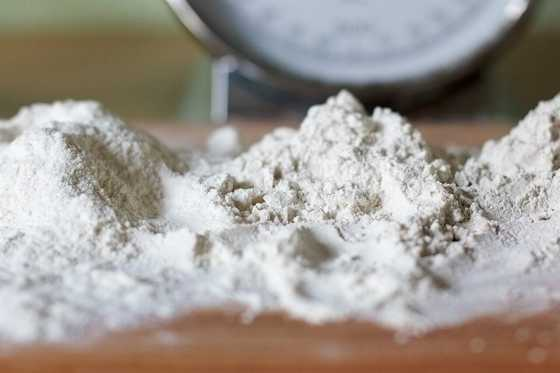
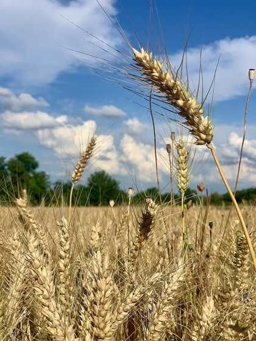
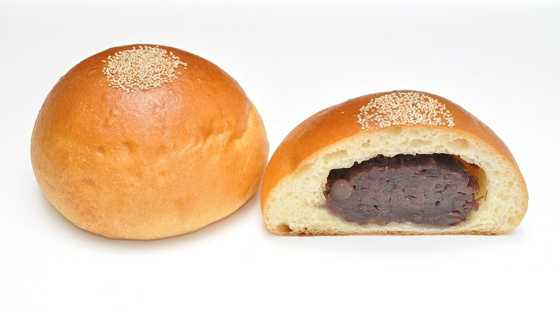

お店の由来・想い
「スリール」はフランス語で「笑顔」に由来する店名だと、開業時の報道で紹介されています。「うちのパンを食べたお客さんに笑顔や幸せを届けたい」という想いが込められているそうです。
店主は伊那市出身で、元陸上の実業団選手。引退後にパン作りの道へ進み、パン製造会社で長く経験を積みながら、自分の店を持つ夢を温めてきました。2023年9月に西町で開業しています(報道による)。
店舗は空き家を改修した小さな店で、灰色の壁と木目調のカウンターが目印と紹介されています。「老若男女に食べてもらえるパンを作りたい」という言葉も伝えられています。
※上記は開業時(2023年)の報道に基づく内容です。最新の状況はInstagramなどでご確認ください。




口コミ
以下は制作側が作成した「イメージ例」で、実在のお客様の声ではありません。
イメージ例
フランスパンの香りがよくて、ついもう一本と手が伸びました。
イメージ例
食パンは耳までおいしく、朝ごはんが楽しみになります。
イメージ例
小さなお店ですが、気持ちよく迎えてもらえました。
アクセス
- 住所
- 〒396-0026 長野県伊那市西町5215-1
- 電話
- 準備中
- 営業時間
- 準備中
- 定休日
- 準備中
- instagram.com/bakery_thrill